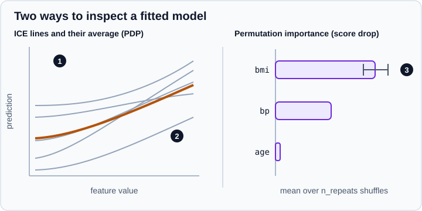

Permutation Importance & Partial Dependence
|
This content was generated with the assistance of AI and should be verified against the official documentation before being relied on in production. |
A fitted model is useful only if you can check that it relies on sensible information. The sklearn.inspection module
offers two model-agnostic techniques for this. Permutation importance answers "how much does the model’s score
fall if a feature is scrambled?". Partial dependence (PDP) and individual conditional expectation (ICE) plots
answer "how does the prediction change when a feature moves, on average and for single samples?". Both work with any
fitted estimator, including full pipelines, and neither requires the model to expose coefficients. This page targets
scikit-learn 1.9 (1.9.1 at the time of writing) with pandas 3.1, NumPy 2.5 and Matplotlib 3.11, and was
checked in October 2026. Examples target Python 3.13 or 3.14 and were run on Python 3.13. Every example was run with those versions and the printed output is the real output. The
Display classes used for plotting are described in general in
Display Objects; the statistical meaning of scores and metrics is in
Metrics & Scoring; the surrounding workflow is in
Model Evaluation & Validation.

Permutation feature importance
The algorithm is short. Compute the model’s score on a data set. For each feature, repeat \(K\) times: shuffle that column, which breaks its relationship with the target while keeping its distribution, and score the model again. The importance of feature \(j\) is the reference score minus the average of the \(K\) shuffled scores:
\[i_j = s - \frac{ 1 }{ K } \sum_{k=1}^{ K } s_{k,j}\]
Larger values mean the model depended more on the feature, and values near zero or negative mean that scrambling it did
not hurt. Negative values are noise around zero, not "harmful features". The function is
sklearn.inspection.permutation_importance; it returns a bunch with importances_mean, importances_std and the
full importances array of shape (n_features, n_repeats).
import pandas as pd
from sklearn.datasets import load_diabetes
from sklearn.ensemble import RandomForestRegressor
from sklearn.inspection import permutation_importance
from sklearn.linear_model import Ridge
from sklearn.model_selection import train_test_split
X, y = load_diabetes(as_frame=True, return_X_y=True)
X_train, X_val, y_train, y_val = train_test_split(X, y, random_state=0)
model = Ridge(alpha=1e-2).fit(X_train, y_train)
print("R2 on validation:", round(model.score(X_val, y_val), 3))
r = permutation_importance(model, X_val, y_val, n_repeats=30, random_state=0)
print(list(r.keys()), r.importances.shape)
summary = pd.DataFrame({"mean": r.importances_mean, "std": r.importances_std}, index=X.columns)
print(summary.sort_values("mean", ascending=False).round(3))
# several metrics at once reuse the same predictions
r_multi = permutation_importance(model, X_val, y_val, n_repeats=30, random_state=0,
scoring=["r2", "neg_mean_squared_error"])
for name, res in r_multi.items():
top = pd.Series(res.importances_mean, index=X.columns).nlargest(3).round(1)
print(name, top.to_dict())
# the same model class on training versus held-out data, next to impurity importance
rf = RandomForestRegressor(n_estimators=100, random_state=0).fit(X_train, y_train)
on_train = permutation_importance(rf, X_train, y_train, n_repeats=10, random_state=0)
on_val = permutation_importance(rf, X_val, y_val, n_repeats=10, random_state=0)
cmp = pd.DataFrame({"train": on_train.importances_mean, "validation": on_val.importances_mean,
"impurity": rf.feature_importances_}, index=X.columns)
print(cmp.sort_values("validation", ascending=False).round(3))
print("forest R2 train / validation:", round(rf.score(X_train, y_train), 3), round(rf.score(X_val, y_val), 3))Output:
R2 on validation: 0.357
['importances_mean', 'importances_std', 'importances'] (10, 30)
mean std
s5 0.204 0.050
bmi 0.176 0.048
bp 0.088 0.033
sex 0.056 0.023
s1 0.042 0.031
s4 0.003 0.008
s6 0.003 0.003
s3 0.002 0.013
s2 0.002 0.003
age -0.002 0.004
r2 {'s5': 0.2, 'bmi': 0.2, 'bp': 0.1}
neg_mean_squared_error {'s5': 1013.9, 'bmi': 872.7, 'bp': 438.7}
train validation impurity
bmi 0.465 0.114 0.359
s5 0.422 0.094 0.249
bp 0.127 0.043 0.093
age 0.060 0.018 0.050
s2 0.065 0.000 0.053
sex 0.012 -0.001 0.009
s3 0.082 -0.005 0.055
s1 0.044 -0.010 0.042
s4 0.030 -0.016 0.027
s6 0.074 -0.019 0.064
forest R2 train / validation: 0.926 0.219
The two blocks above need careful reading. In the first, a feature is trustworthy only if its mean exceeds a couple of
standard deviations: s5, bmi, bp and sex clear that bar, while age, s2, s3, s4 and s6 are
indistinguishable from zero. In the second, the random forest has a training R2 of 0.926 and a validation R2 of 0.219.
On the training data the importances are large for most features, including ones that carry no generalisable signal;
on held-out data most collapse to zero or below. Impurity-based importance (the feature_importances_ attribute of
tree ensembles) is computed from the training data only, so it cannot tell the two situations apart.
Choosing the data and the metric
-
Held-out data answers the useful question. Computing importance on a validation or test set shows which features contribute to generalisation. Computing it on training data shows which features the model uses, including those it has overfitted to. Compute it on a model that already has a good validation score; a feature that is unimportant for a poor model may be important for a better one.
-
The metric defines importance.
scoringaccepts a metric name, a callable, or a list or dictionary of several metrics, which is more efficient than separate calls because predictions are reused. Rankings are usually similar but need not be, particularly for imbalanced classification where the choice of metric matters. See Metrics & Scoring. -
Repeats give a spread.
n_repeatscontrols how many times each column is shuffled; the standard deviation shows how stable an estimate is. Setrandom_statefor reproducible values. -
Cost. The cost grows with features times repeats times the cost of scoring.
n_jobsparallelises over features, andmax_samples(a fraction or a count) lets each repeat use a subset of the rows. -
Weights.
sample_weightis passed to the scorer. -
Pipelines. Pass the whole fitted
Pipelineand the raw DataFrame: columns are shuffled before preprocessing, so the importance is attributed to the original columns rather than to encoded ones.
Correlated features
When two features carry the same information, scrambling one leaves the other intact, so the model’s score barely falls and both features look unimportant although they are essential as a pair. The example builds a feature and a near copy of it, plus a noise feature:
import numpy as np
import pandas as pd
from sklearn.ensemble import RandomForestClassifier
from sklearn.inspection import permutation_importance
from sklearn.model_selection import train_test_split
rng = np.random.default_rng(0)
n = 1000
signal = rng.normal(size=n)
X = pd.DataFrame({
"signal": signal,
"signal_copy": signal + rng.normal(scale=0.05, size=n), # almost identical feature
"noise": rng.normal(size=n),
})
y = (signal + 0.5 * rng.normal(size=n) > 0).astype(int)
X_train, X_val, y_train, y_val = train_test_split(X, y, random_state=0)
rf = RandomForestClassifier(n_estimators=200, random_state=0).fit(X_train, y_train)
print("accuracy:", round(rf.score(X_val, y_val), 3))
r = permutation_importance(rf, X_val, y_val, n_repeats=20, random_state=0)
print(pd.Series(r.importances_mean, index=X.columns).round(3).to_dict())
# without one of the twins, the remaining feature gets its importance back
cols = ["signal", "noise"]
rf2 = RandomForestClassifier(n_estimators=200, random_state=0).fit(X_train[cols], y_train)
r2 = permutation_importance(rf2, X_val[cols], y_val, n_repeats=20, random_state=0)
print(pd.Series(r2.importances_mean, index=cols).round(3).to_dict())
def group_importance(model, X, y, columns, n_repeats=20, seed=0):
"""Score drop when the rows of several columns are shuffled together."""
rng = np.random.default_rng(seed)
base = model.score(X, y)
drops = []
for _ in range(n_repeats):
shuffled = X.copy()
shuffled[columns] = X[columns].to_numpy()[rng.permutation(len(X))]
drops.append(base - model.score(shuffled, y))
return float(np.mean(drops))
print("group importance:", round(group_importance(rf, X_val, y_val, ["signal", "signal_copy"]), 3))Output:
accuracy: 0.804
{'signal': 0.073, 'signal_copy': 0.166, 'noise': -0.007}
{'signal': 0.308, 'noise': -0.007}
group importance: 0.298
With the twin present the importance of the signal is split between two columns (0.073 and 0.166); without it the single
column shows 0.308, and shuffling both together gives 0.298. The remedies are to drop all but one feature of each
cluster of correlated features (the official documentation suggests clustering the correlated features and keeping one per cluster), or to permute the whole group at once as group_importance does. The function is a hand-written
helper, not part of scikit-learn.
Permutation versus impurity-based importance
Tree ensembles also provide feature_importances_, the mean decrease in impurity. The user guide points out two
weaknesses. It is computed on the training data, so it can assign high importance to features that are not predictive on
unseen data when the model overfits. And it is biased towards high-cardinality features, typically numeric ones, over
binary features or categorical variables with few categories. Permutation importance does not have these biases and works
for any model class. It is not free of problems, though: it requires a scoring metric and a held-out set, and it inherits the
correlated-feature caveat above.
Partial dependence and ICE
A partial dependence plot shows the average prediction as one or two features of interest vary, marginalising over the remaining ("complement") features. For a response function \(f\), the partial dependence at a point \(x_S\) is the expectation of \(f(x_S, X_C)\) over the distribution of the complement features \(X_C\). The estimate averages over the data. An ICE curve is a single term of that average: the prediction of one sample as the feature of interest changes, with its other values held fixed. The average of all ICE curves is the partial dependence, which is what the figure at the top of the page shows. ICE plots reveal heterogeneity: a flat PDP can hide samples that go up while others go down.
Two assumptions limit interpretation. The features of interest must be independent of the complement features; with correlated features the technique evaluates the model on combinations that cannot occur in the data. And only one or two features can be shown in a PDP, and only one in an ICE plot, so you choose features guided by permutation importance or domain knowledge.
The two functions
-
partial_dependence(estimator, X, features, ...)returns the numbers: a bunch withgrid_values,averageand, forkind="individual"or"both",individual. -
PartialDependenceDisplay.from_estimator(estimator, X, features, ...)draws the plots with Matplotlib and returns a display object withfigure_,axes_,lines_and the computed values. Its useful arguments are:
| Argument | Effect |
|---|---|
|
Indices or names of the features. A tuple, such as |
|
|
|
Number of grid points per feature (default 100) and the lower and upper percentile that bound the grid (default 0.05 and 0.95). |
|
A dictionary from the position of a feature in |
|
Names, indices or a boolean mask of the categorical features. Their dependence is drawn as bars (one-way) or a heatmap (two-way). |
|
The class label for a multiclass classifier, or the output for multi-output regression. |
|
|
|
|
|
Starts every ICE and PD line at zero on the y-axis, which makes slopes easier to compare (added in 1.1). |
|
Number or fraction of samples drawn for ICE curves (default 1000); the PDP still uses all the samples. |
|
Weights for the average. |
Raw values and the two computation methods
partial_dependence is the right entry point when you want numbers, for example to compare models or to plot with your own
style. The example below also contrasts the two computation methods.
import numpy as np
from sklearn.datasets import load_diabetes
from sklearn.ensemble import HistGradientBoostingRegressor
from sklearn.inspection import partial_dependence
from sklearn.model_selection import train_test_split
X, y = load_diabetes(as_frame=True, return_X_y=True)
X_train, X_val, y_train, y_val = train_test_split(X, y, random_state=0)
hgb = HistGradientBoostingRegressor(random_state=0).fit(X_train, y_train)
res = partial_dependence(hgb, X_train, ["bmi"], grid_resolution=5)
print(list(res.keys()))
print(res["grid_values"][0].round(3))
print(res["average"].round(1))
both = partial_dependence(hgb, X_train, ["bmi"], grid_resolution=5, kind="both")
print(list(both.keys()), both["individual"].shape) # (outputs, samples, grid points)
# a custom grid replaces grid_resolution and percentiles (scikit-learn 1.7 or newer)
custom = partial_dependence(hgb, X_train, ["bmi"], custom_values={"bmi": np.array([-0.05, 0.0, 0.05])})
print(custom["grid_values"][0], custom["average"].round(1))
# recursion and brute force use different baselines for boosting models
fast = partial_dependence(hgb, X_train, ["bmi"], grid_resolution=5, method="recursion")
slow = partial_dependence(hgb, X_train, ["bmi"], grid_resolution=5, method="brute")
print("recursion:", fast["average"].round(1))
print("brute: ", slow["average"].round(1))
try:
partial_dependence(hgb, X_train, ["bmi"], method="recursion", kind="individual")
except ValueError as exc:
print("ValueError:", str(exc))Output:
['grid_values', 'average'] [-0.068 -0.029 0.01 0.05 0.089] [[-30. -23.1 20.8 37.1 71.7]] ['grid_values', 'average', 'individual'] (1, 331, 5) [-0.05 0. 0.05] [[-29. 1.9 37.1]] recursion: [[-30. -23.1 20.8 37.1 71.7]] brute: [[126.6 133.2 166.9 181.5 215.5]] ValueError: The 'recursion' method only applies when 'kind' is set to 'average'
The brute method works with any estimator. It evaluates the model on the whole data set with the feature of interest
replaced by each grid value, so each grid point costs a pass over the data, and it is the only method that supports ICE.
The recursion method walks the trees, weighting the branches by the fraction of training samples that reached them. It
is faster but works only for some tree-based estimators (the gradient boosting and histogram gradient boosting
estimators, DecisionTreeRegressor and RandomForestRegressor) and only for kind="average". auto uses recursion
when it is supported. The two methods can disagree, and the output shows how: both curves rise with bmi, but the recursion values start
near -30 while the brute values start near 127 and the differences between neighbouring grid points are not the same. For classifiers the
difference is larger, because with recursion the response is always the decision function:
from sklearn.datasets import load_breast_cancer
from sklearn.ensemble import HistGradientBoostingClassifier
from sklearn.inspection import partial_dependence
X, y = load_breast_cancer(as_frame=True, return_X_y=True)
clf = HistGradientBoostingClassifier(random_state=0).fit(X, y)
feature = ["mean radius"]
for method in ["recursion", "brute"]:
res = partial_dependence(clf, X, feature, grid_resolution=4, method=method)
print(f"{method:<9}", res["average"].round(3))
res = partial_dependence(clf, X, feature, grid_resolution=4, method="brute",
response_method="decision_function")
print("brute + decision_function", res["average"].round(3))Output:
recursion [[1.78 1.841 1.781 1.781]] brute [[0.627 0.627 0.627 0.627]] brute + decision_function [[2.301 2.362 2.302 2.302]]
Recursion returns values on the log-odds scale of the decision function, brute force returns probabilities. Never compare
curves from different methods or response types without checking the scale. Set method and response_method
explicitly when you want curves that are comparable across models. This model uses a single feature that barely matters
to it, so the curves are nearly flat; the point of the example is the scale.
Pipelines, categorical features and plots
A Pipeline is a valid estimator for both functions, and the data stay in their original form: you pass the raw DataFrame
and name the original columns, so the plots speak the language of the domain rather than of encoded columns. The example
trains a boosting model on synthetic bike-rental-like data with a categorical column, computes the values and draws a
figure that mixes one-way plots, a categorical bar plot and a two-way plot, followed by a centred ICE plot. Figures are
saved with savefig; in a notebook the display is shown directly.
import matplotlib
matplotlib.use("Agg") # no window: figures are saved to files
import numpy as np
import pandas as pd
from sklearn.compose import make_column_transformer
from sklearn.ensemble import HistGradientBoostingRegressor
from sklearn.inspection import PartialDependenceDisplay, partial_dependence
from sklearn.pipeline import make_pipeline
from sklearn.preprocessing import OrdinalEncoder
rng = np.random.default_rng(0)
n = 600
df = pd.DataFrame({
"temp": rng.uniform(-5, 35, n),
"humidity": rng.uniform(20, 100, n),
"season": rng.choice(["winter", "spring", "summer", "autumn"], n),
})
rentals = (10 + 3 * df["temp"].clip(0, 30) - 0.2 * df["humidity"]
+ df["season"].map({"winter": -10, "spring": 0, "summer": 15, "autumn": 5})
+ rng.normal(0, 3, n))
encoder = make_column_transformer(
(OrdinalEncoder(), ["season"]), remainder="passthrough", verbose_feature_names_out=False
).set_output(transform="pandas")
# after the encoder the columns are season, temp, humidity: season is column 0
model = make_pipeline(encoder, HistGradientBoostingRegressor(categorical_features=[0], random_state=0))
model.fit(df, rentals)
# the pipeline is the estimator and the data keep their original form and column names
res = partial_dependence(model, df, ["temp"], grid_resolution=5)
print(res["grid_values"][0].round(1), res["average"].round(1))
res_cat = partial_dependence(model, df, ["season"], categorical_features=["season"])
print(res_cat["grid_values"][0], res_cat["average"].round(1))
res_custom = partial_dependence(model, df, ["temp"], custom_values={"temp": np.array([0.0, 10.0, 20.0, 30.0])})
print(res_custom["grid_values"][0], res_custom["average"].round(1))
disp = PartialDependenceDisplay.from_estimator(
model, df, ["temp", "humidity", "season", ("temp", "humidity")],
categorical_features=["season"], kind="average", grid_resolution=15,
)
disp.figure_.savefig("partial_dependence.png", dpi=100)
print(disp.axes_.shape)
ice = PartialDependenceDisplay.from_estimator(
model, df, ["temp", "humidity"], kind="both", subsample=50, centered=True,
random_state=0, grid_resolution=15,
)
ice.figure_.savefig("ice.png", dpi=100)
print(ice.lines_.shape)Output:
[-2.3 6.6 15.5 24.4 33.4] [[ 1.4 20.8 45.8 75. 89.9]] ['autumn' 'spring' 'summer' 'winter'] [[50.2 45.5 60.2 36.1]] [ 0. 10. 20. 30.] [[ 0.9 31.2 61.4 88.6]] (2, 3) (1, 2, 51)
The numbers match how the data were generated: rentals rise steeply with temperature, and the seasonal order summer,
autumn, spring, winter follows the offsets used in the simulation. The axes_ array has two rows and three columns for
the four requested plots, laid out with the default n_cols=3. lines_ has one entry per ICE subsample plus the
average line: 50 sampled curves plus one, for each of the two features. The data are synthetic, so only the mechanics
matter. Note that the categorical encoder was applied inside the pipeline, which is why categorical_features takes the
original column name here and HistGradientBoostingRegressor takes the position of the encoded column.
Multiclass models
For a classifier with more than two classes, PartialDependenceDisplay.from_estimator needs target, the class for
which the dependence is plotted. partial_dependence without a target returns the dependence for every class in the
first dimension of average. The y-axis is the predicted probability, the decision function or the log-odds of that
class depending on method and response_method, so state which one in any report.
Choosing the technique
| Question | Use | Watch out for |
|---|---|---|
Which features does the model rely on? |
Permutation importance on held-out data |
Correlated features share their importance; use a model with a good validation score. |
What does the model do as a feature changes? |
PDP, then ICE to check for interactions |
Needs feature independence; averages can hide opposite effects. |
Is the effect the same for everyone? |
ICE with |
Many curves overplot; use |
Which feature pairs interact? |
Two-way PDP for pairs picked by importance |
Expensive with |
Which features matter inside the training fit? |
Impurity importance of trees |
Biased towards high cardinality and overfitted features; do not use it alone. |
Neither technique proves causation. They describe the fitted model, which can rely on proxies, leaked columns or artefacts of the data collection; a surprisingly large importance of an identifier or a timestamp is a leakage alarm (see Common Pitfalls: Leakage & Randomness). For hyper-parameters that change the importances, such as the depth of a tree, tune first and inspect after, as described in Grid, Randomized & Halving Search. Gradient-boosted models, the usual target of these plots, are covered in Gradient Boosting & HistGradientBoosting and Random Forests & Bagging.
Common pitfalls
-
Computing permutation importance on the training set and concluding the model generalises through those features.
-
Trusting a ranking without its spread. Look at
importances_stdand use enough repeats. -
Ignoring correlated features, which makes real predictors look unimportant (permutation) or splits their importance (impurity).
-
Reading a PDP as a causal effect. It is the model’s average response under an independence assumption.
-
Comparing curves on different scales. Check
methodandresponse_method. -
Plotting a feature that is not in the data passed to
X. Column names and positions refer to theXargument, which for a pipeline is the raw data. -
Using ICE with
method="recursion". It raises an error; ICE requiresbrute. -
Forgetting
categorical_featuresfor integer-coded categories, which are then drawn as continuous.
Where older books and tutorials are outdated
Older material uses interfaces that have changed. Before scikit-learn 0.22 there was no permutation_importance;
guides of that period either wrote the shuffling loop by hand or used the impurity-based feature_importances_, whose
bias towards high-cardinality features the current documentation warns about. In 0.21 ensemble.partial_dependence and
ensemble.plot_partial_dependence were deprecated in favour of the sklearn.inspection versions. In 1.0 the function
plot_partial_dependence was deprecated in favour of PartialDependenceDisplay.from_estimator, with removal scheduled
for 1.2, so tutorials that call it fail on current releases. In 1.3 the result of partial_dependence gained the key
grid_values and the old key values was deprecated, with removal scheduled for 1.5; code that reads values
needs updating. Very old code also calls sklearn.cross_validation or sklearn.grid_search around these steps; those
modules moved to sklearn.model_selection in 0.18. The full list of changes is on
What’s New.
References
-
scikit-learn user guide: Partial dependence and individual conditional expectation plots
-
scikit-learn example: Permutation importance vs random forest feature importance (MDI)
-
scikit-learn example: Permutation importance with multicollinear or correlated features
-
scikit-learn example: Partial dependence and individual conditional expectation plots
-
L. Breiman, "Random Forests", Machine Learning 45(1), 2001
-
A. Goldstein, A. Kapelner, J. Bleich and E. Pitkin, "Peeking Inside the Black Box: Visualizing Statistical Learning With Plots of Individual Conditional Expectation", Journal of Computational and Graphical Statistics 24(1), 2015